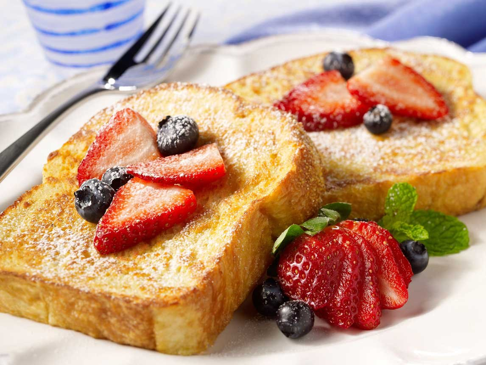

Fluffy French Toast

Description
This french toast recipe is different because it uses flour.
I have given it to some friends and they've all liked it better
than the French toast they usually make!
Ingredients
- 1/4 cup all-purpose flour
- 1 cup milk
- 1 pinch salt
- 3 eggs
- 1/2 teaspoon ground cinnamon
- 1 teaspoon vanilla extract
- 1 tablespoon brown sugar
- 12 slices of thick bread
Optional Ingredients
- sliced fruit
- powered sugar
- whipped cream
- nuts and/or nut spread
- nutella/hazelnut spread
- syrup
Directions
- Measure flour into a large mixing bowl. Slowly whisk in the milk.
Whisk in the salt, eggs, cinnamon, vanilla extract and sugar until smooth.
- Heat a lightly oiled griddle or frying pan over medium heat.
- Soak bread slices in mixture until saturated. Cook each side of the bread slices
until golden brown. Serve hot.
- Add your favorite toppings on your french toast!
Back to Home Page